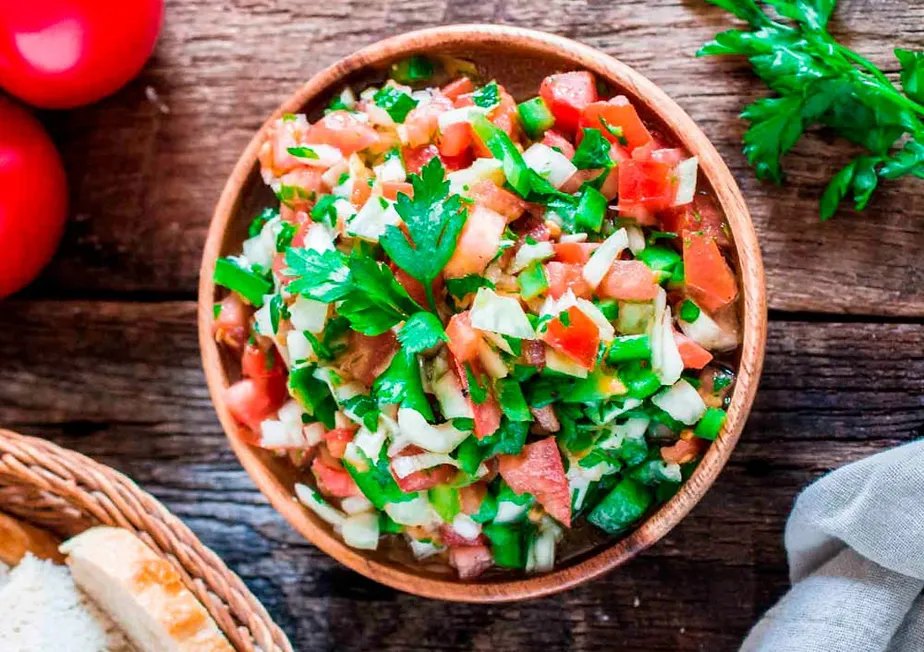

Ingnis-Churrascaria
A Churrascaria Ignis é um lugar onde a tradição do churrasco se encontra com a excelência no atendimento. Com um ambiente acolhedor e moderno, nosso foco é oferecer uma experiência gastronômica única, destacando cortes selecionados e preparados com o máximo de cuidado. A cada refeição, nossos clientes desfrutam de pratos suculentos, acompanhados de um atendimento de primeira, tornando cada visita um momento especial. Seja para uma refeição em família ou um evento mais formal, a Churrascaria Ignis é o destino perfeito para quem aprecia uma boa comida e momentos de prazer.
 pedidos
pedidos
Acompanhamentos
Vinagreti
#

Salada de Tomate
#

Pão de Alho
#
Porque escolher o nosso churrasco?
Na Churrascaria Ignis, a qualidade é a nossa prioridade. Por isso, selecionamos os melhores cortes de carne, garantindo que cada prato seja uma experiência inesquecível. Além disso, nossa equipe é treinada para oferecer um atendimento de excelência, tornando cada visita um momento especial. Seja para uma refeição em família ou um evento mais formal, a Churrascaria Ignis é o destino perfeito para quem aprecia uma boa comida e momentos de prazer.

Bebidas

Cerveja
#

Refrigerante
#

Suco
#
Água
#
Avaliações
#
nome 1
#
#
nome 2
#
#
nome 3
#